Web development
Responsive interfaces, product flows and dashboards built for real users.
ReactNext.jsHTML/CSS
From the first interface to the APIs and data behind it, I turn ideas into polished, useful products. I work across React, Next.js, Flutter and React Native, with backend experience in FastAPI, Node.js and Firebase.
I choose tools to fit the product, and bring the pieces together into a reliable experience from interface to data.
Responsive interfaces, product flows and dashboards built for real users.
Cross-platform applications with thoughtful, consistent user experiences.
APIs, authentication, data flows and connections to existing services.
Structured data, practical testing and a dependable development workflow.
A mix of web platforms, connected mobile applications and practical AI-enabled tools.
An exam preparation platform designed to help medical candidates practise with structure and understand their progress.
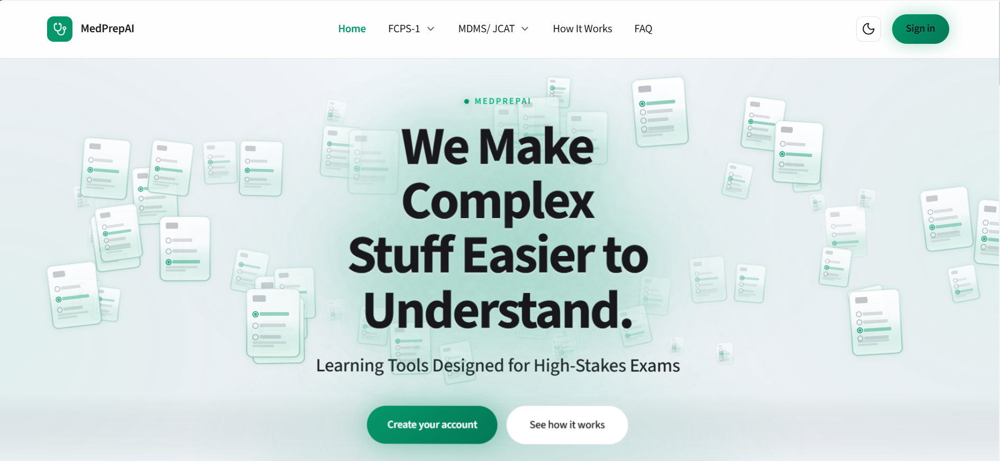
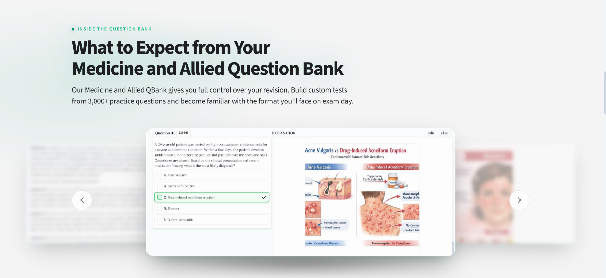
A cross-platform library companion that connects readers and students with the Koha Library Management System.
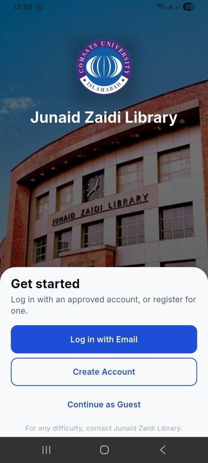
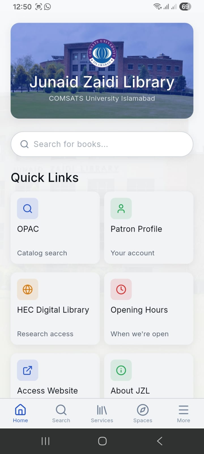
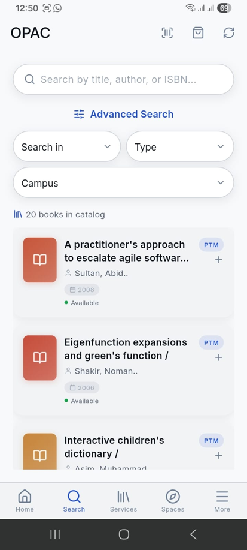
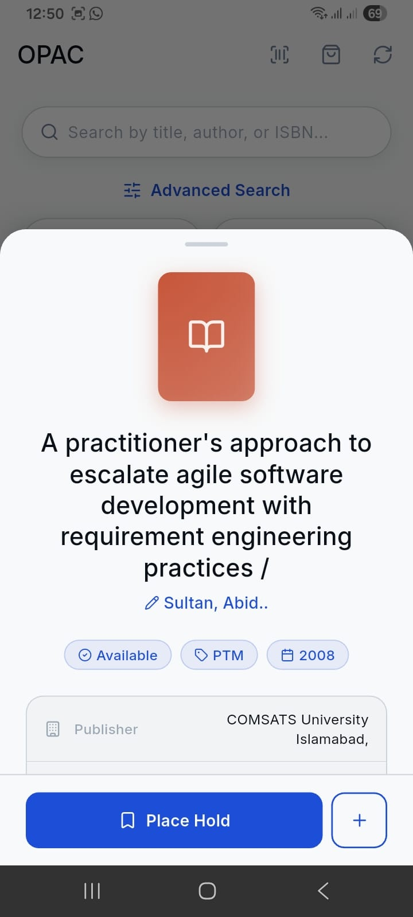
A mobile-to-backend computer vision application that sends camera images to an API for face processing and recognition.
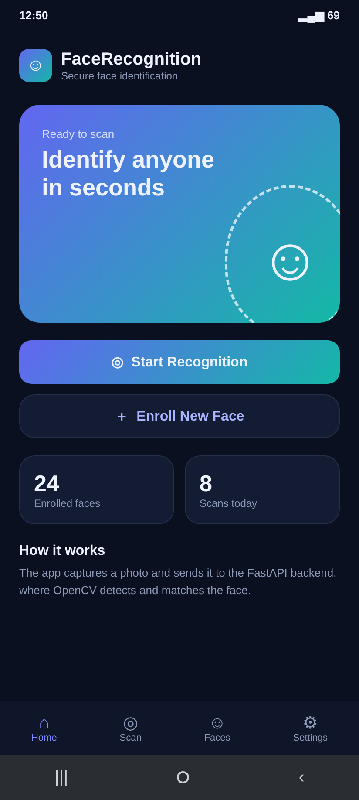
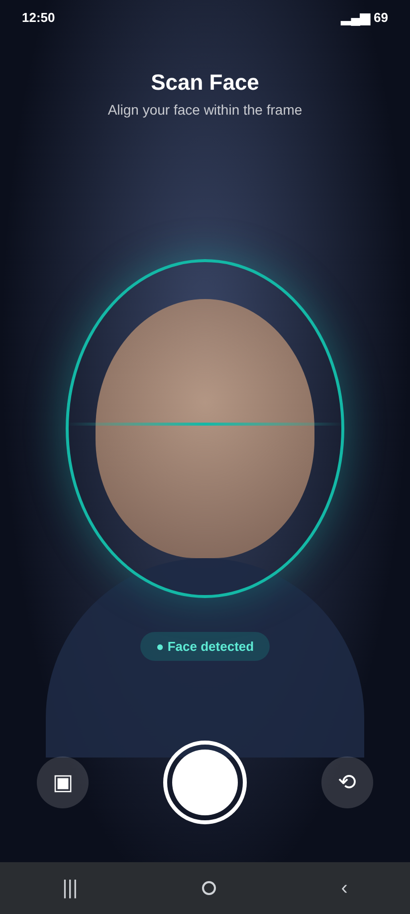
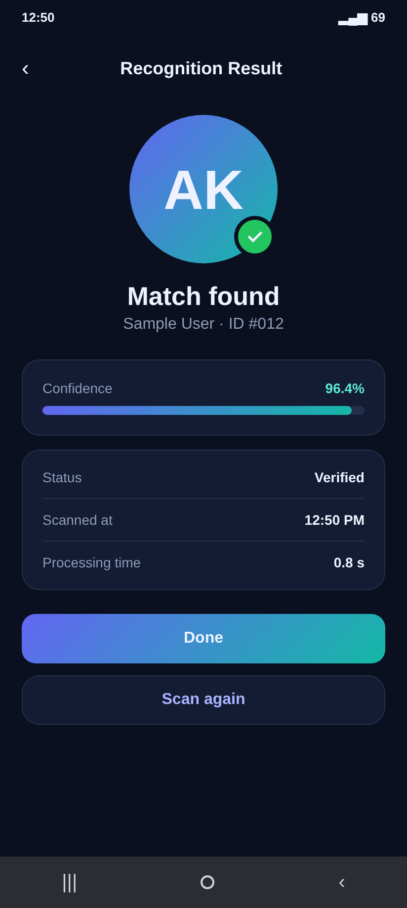
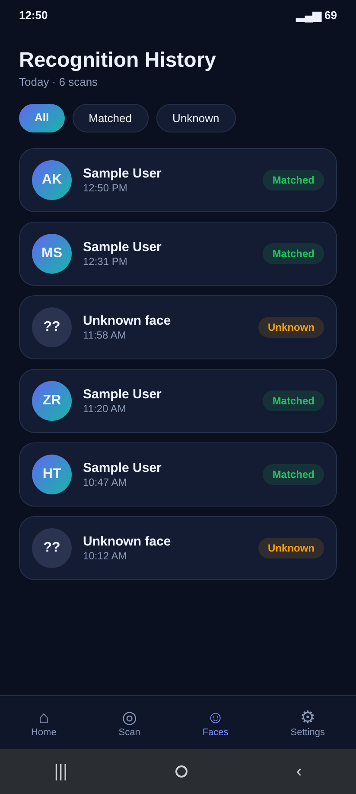
A mobile assistant built to make practical agricultural guidance easier to access for farmers in Pakistan.
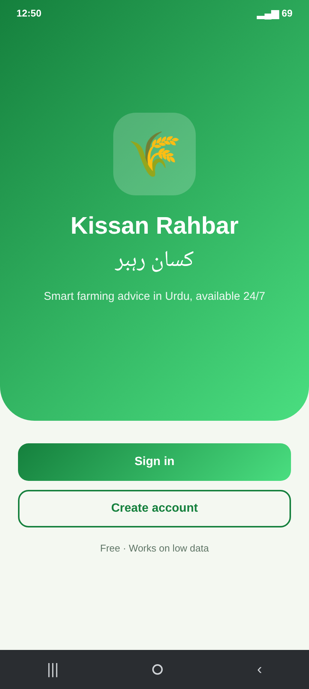
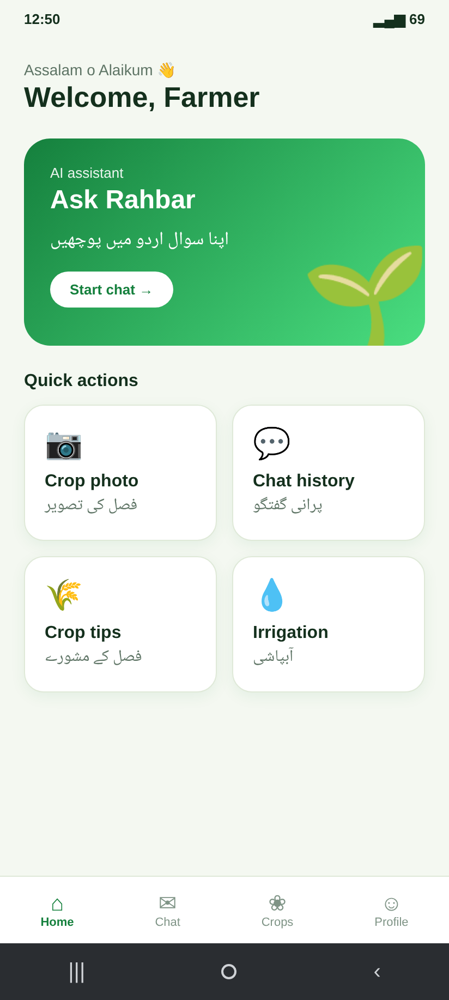
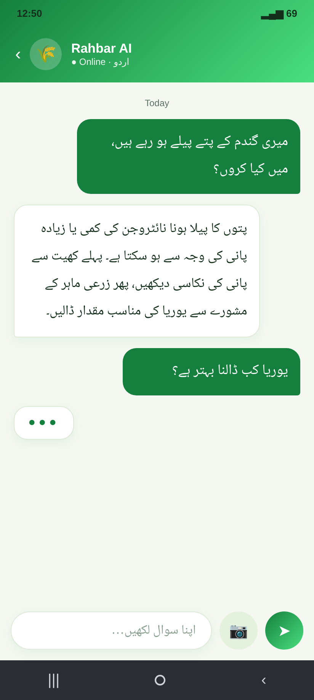
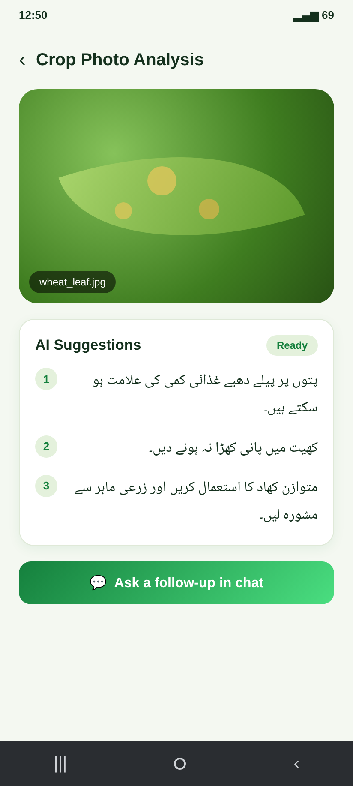
I enjoy working across disciplines, understanding the product context and carrying an idea through implementation.
COMSATS University Islamabad · 2023–2027 (expected)
I’m open to internships, freelance work and full-time opportunities. Reach out and tell me what you’re working on.